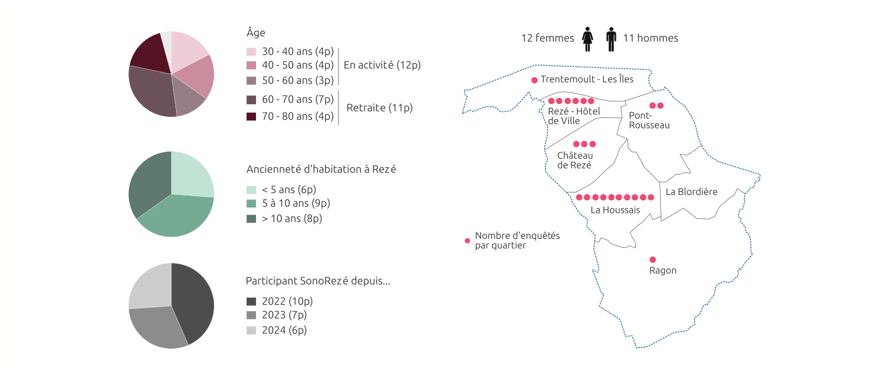
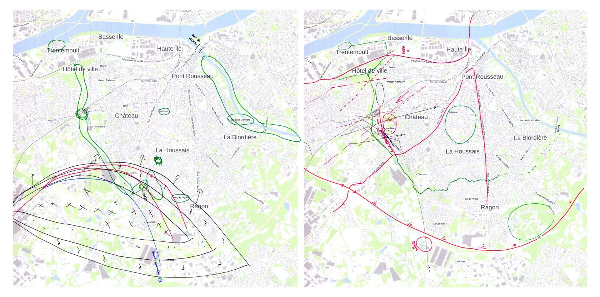
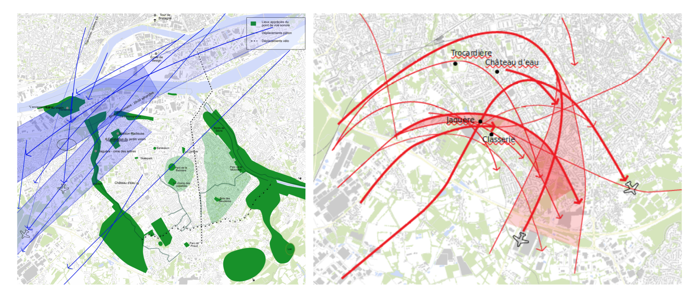
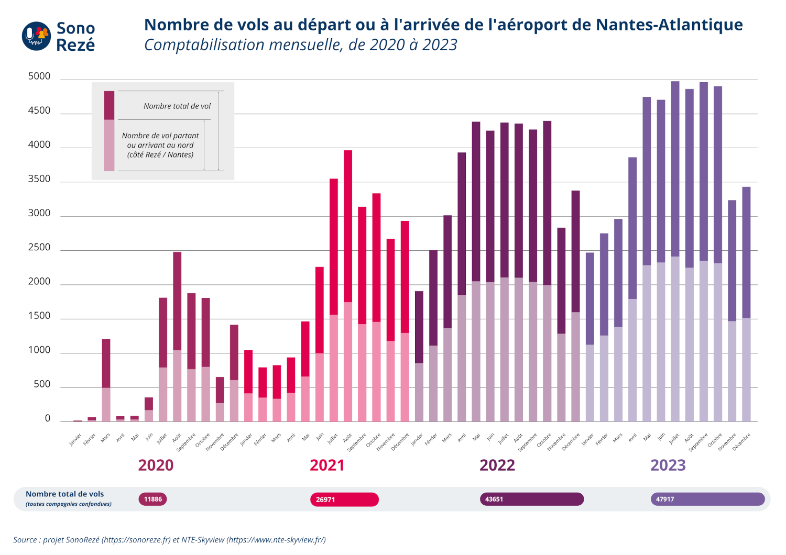
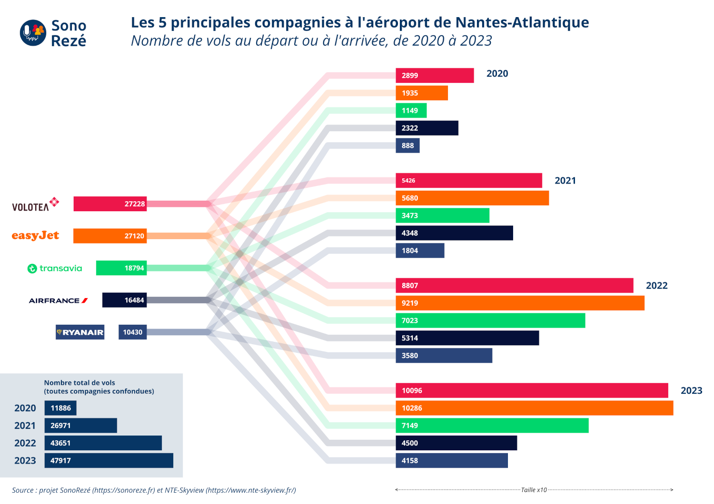
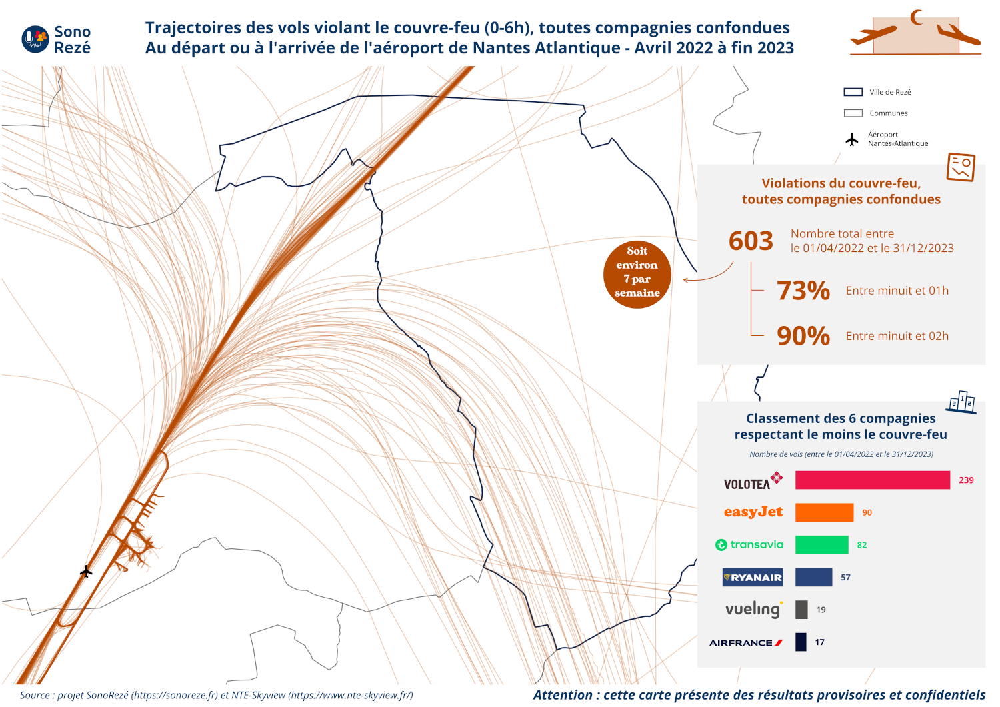
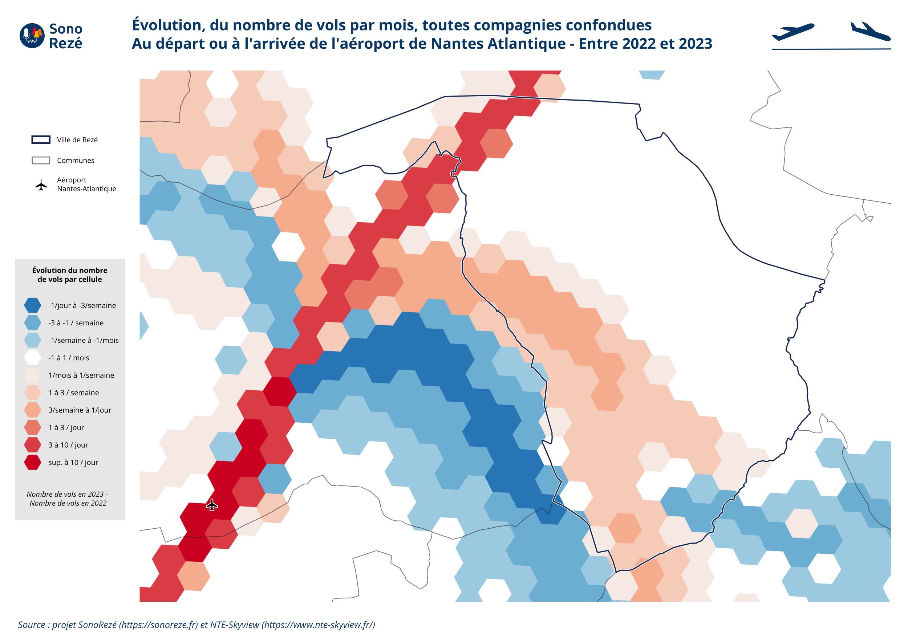
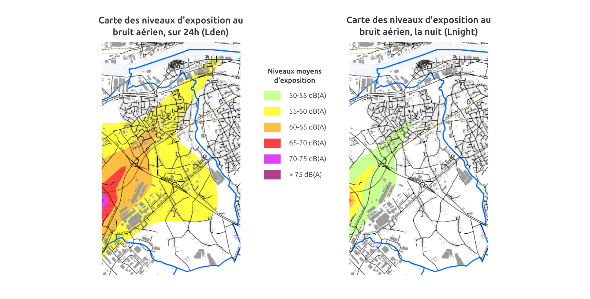
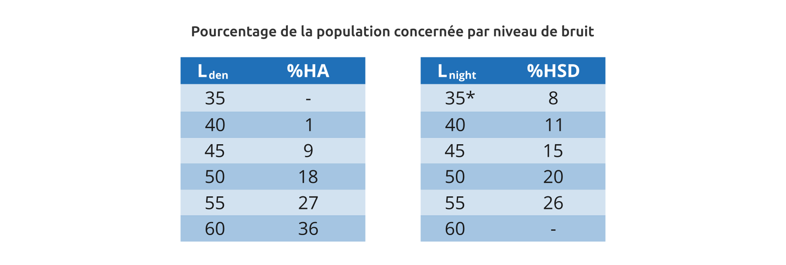
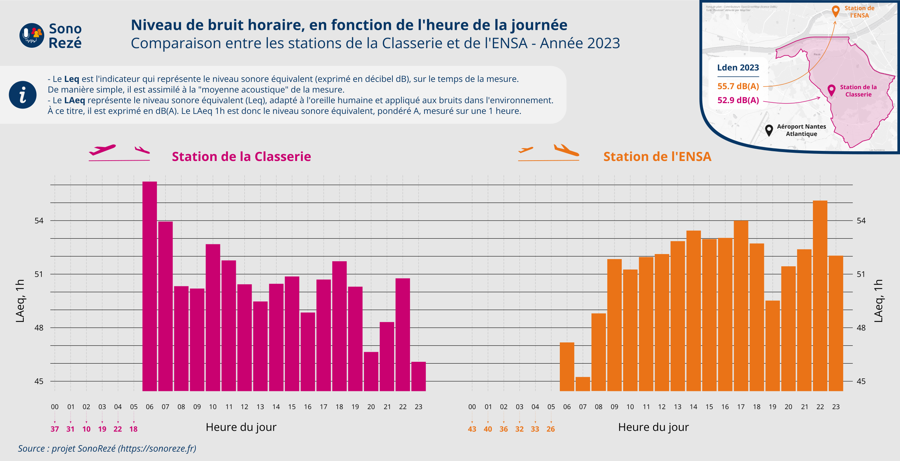

CETTE PAGE EST EN COURS DE CONSTRUCTION
Préambule
Sur cette page nous présentons l'ensemble des résultats issus de la thématique "bruit aérien".
Ceux-ci se déclinent en 4 parties, correspondant aux 4 actions définies collégiallement lors des ateliers : (1) Carte des perceptions du bruit aérien par les habitants, (2) Variabilité du bruit des avions, (3) Chiffres de sensibilisation et (4) Enquête de gêne.
1. Carte de perception
Cette section présente le travail réalisé pour produire une carte collaborative de la perception du bruit aérien par les habitants de Rezé.
Recueil
et analyse
Un processus long, mais riche d'enseignements
Sur une période d'un mois, Natalia Escar Otin, chercheuse à l'Institut d'Agro d'Angers, a interviewé 23 habitants de Rezé, répartis sur tout le territoire communal. Ces entretiens avaient pour objectif de comprendre comment les habitants perçoivent leur environnement d'un point de vue sonore. À ce titre, un focus particulier était fait sur le bruit aérien.

Pour faciliter les échanges, chaque habitant disposait d'une carte vierge de Rezé, sur laquelle il était invité à dessiner / schématiser les éléments marquants pour lui. Cette phase a permis de mettre en évidence la réelle expertise développée par les habitants (reconnsaissance des sources, connaissance des variabilités en fonction des saisons, ...).

Pré-analyse et retranscription graphique
Cette matière ainsi collectée, couplée à la retranscription des échanges, a permis de produire une première série de cartes de synthèse représentant la perception "sonore" des habitants de leur territoire rezéen.
C'est ce travail intermédiaire qui servira à l'étape suivante.

La carte
résultante
Synthétiser pour extraire l'essence du paysage sonore
Pour réaliser cette carte, synthétisant l'ensemble des contributions, il a fallu opérer un important travail de recoupement et de recherche graphique (comment représenter un son, sa dynamique, sa trajectoire, ... ?).
Pour ce faire, le consortium s'est appuyé sur les compétences de la graphiste Séverine Coquelin "La Vilaine est Jolie".
Le résultat final est attendu pour l'automne 2024.

2. Variabilité du bruit des avions
Dans cette section nous présentons les résultats liés à la variabilité du bruit des avions.
Cette variabilité, supposée, a été remontée par les habitants à l'occasion des premiers ateliers (ex: bruit plus important le matin, trajectoires changeantes, ..). À ce stade du projet, il n'y avait pas d'éléments tangibles permettant de corroborer ces dires.
Dans ce contexte, l'objectif du travail a donc été d'apporter une approche scientifique, qui permette d'infirmer ou de confirmer le ressenti des habitants.
Trafic aérien
2020-2023
Trafic, toutes compagnies confondues
Sur la base des données issues de la plateforme NTE-Skyview, nous avons pû comptabiliser le nombre vols d'aéronefs au départ ou à l'arrivée de l'aéroport de Nantes Atlantique, pour les années 2020 à 2023.
Le graphique ci-dessous rend compte du trafic aérien mensuel, pour chacunes des années. Pour chaque mois, on visualise le nombre total de vols ainsi que la part des vols partant ou arrivant au nord (Piste 03), en direction de Rezé et Nantes.

Zoom sur les 5 principales compagnies
En utilisant les métadonnées associées aux trajectoires, il est possible d'analyser plus finement le trafic aérien en se concentrant sur les compagnies.
On y constate que l'aéroport Nantes-Atlantique est principalement utilisé par des compagnies dites "Low cost" (bas coûts) (4 des 5 plus présentes). Les compagnies Volotea et Easyjet dominent ce classement avec respectivement 27228 et 27120 vols depuis 2020, soit plus de 18 vols (atterrissage ou décollage) par jour en moyenne pour chacune de ces deux compagnies.

Limite
La forte progression du trafic entre 2020 et 2023 est en grande partie due à la reprise des vols suite à la période du COVID-19. Les analystes s'accordent pour dire que le volume du trafic de l'année 2024 devrait atteindre celui de 2019, qui constituait un record pour l'aéroport nantais.
Dépassement
de couvre-feu
La carte présentée ci-dessous met en lumière les trajectoires et comptabilise les avions ayant dépassé le couvre-feu, instauré depuis le 1er avril 2022 et courant de minuit à 6 heures du matin.
Pour réaliser cette carte, nous nous sommes basé sur les données issues de la plateforme NTE-Skyview.
Ainsi, du 1er avril 2022 au 31 décembre 2023, on dénombre 603 aéronefs au départ ou à l'arrivée de l'aéroport de Nantes Atlantique, entre minuit et 6h du matin. Dans le détail, il s'agit en grande partie d'atterrissages. 73% de ces dépassements se font entre minuit et 1h. 90% se font avant 2h du matin.
Au final, cela représente en moyenne 7 dépassements par semaine.
Si on s'intéresse aux compagnies, on constate que plus d'un tiers des dépassements concerne la compagine Volotea (239). Deuxième sur le podium, avec 90 dépassements, on retrouve EasyJet, suivit par Transavia (82 dépassements).

Évolution
des trajectoires
Un ressenti ... à confirmer
Dans le cadre des ateliers menés avec les habitants, un point est rapidement apparut dans les échanges : le sentiment que les trajectoires des avions ont évolué, notamment en allant plus vers le nord, et que certaines zones autrefois non impactées l'étaient plus à présent.
À partir des trajectoires collectées depuis 2019, nous avons entrepris de vérifier ce ressenti.
Méthode
Mesurer l'évolution des trajectoires, présentes en si grand nombre sur la zone d'étude, n'est pas une chose triviale. Il est nécessaire de trouver un indicateur quantifiable qui reflète la variation. Pour faciliter la lecture de la carte résultante, nous avons choisi de simplement compter le nombre de passage d'avions par cellule pour chacune des années (2022 et 2023). À partir de là, il est aisé de calculer l'évolution.
De manière concrète, nous avons opéré comme suit :
1. définition d'un maillage hexagonale (d'environ 250m de large);
2. l'ensemble des trajectoires (au départ ou à l'arrivée de l'aéroport) en 2022 et 2023 est découpé avec ce maillage;
3. dans chacune des cellules, on compte le nombre de morceau de trajectoire présent, pour les années 2022 puis 2023;
4. dans chacune des cellules, on déduit l'évolution entre les deux années (2023 moins 2022);
5. on colorie les cellules avec une palette de couleur refletant l'évolution (vers le bleu foncé pour les valeurs négatives, montrant une diminution du nombre de vols en 2023 / vers le rouge foncé pour les valeurs positives, montrant une augmentation du trafic en 2023).

Interprétation
Sur cette carte on constate bien une évolution des trajectoires. Celles-ci ont tendance à se densifier sur le couloir d'atterrisage (trait rouge, en provenance de Nantes), ce qui est logique vu l'augmentation du trafic aérien entre ces deux années.
Chose plus intéressante, on visualise bien en orange une augmentation du nombre de trajectoires au-dessus de Rezé (entre 1/mois et 3/semaine), et en corolaire, une diminution dans les cellules bleues. Ceci montre effectivement un glissement vers le nord - nord/est de certaines trajectoires (pour ce qui concerne Rezé - au nord-ouest on constate la même chose, au-desssus du bourg de Bouguenais).
Limites
Pour réaliser cette carte, nous n'avons traité les trajectoires qu'en 2 dimensions (projetées au sol). Ce résultat ne rend donc pas compte d'une possible modification des trajectoires en altitude. Ainsi, si un avion grimpe plus vite en altitude, mais en prenant un virage moins serré qu'en 2022, il apparaîtra en orange. Pour autant, il sera possible qu'il impacte une emprise au sol plus faible (donc potentiellement qu'il gêne moins d'habitants).
3. Chiffres de sensibilisation
Les participants aux ateliers ont fait remarquer qu'il n'était pas facile, aujourd'hui, d'avoir des chiffres ou indicateurs rendant compte de la situation engendrée par le bruit aérien. En effet, mis à part les données de trafic (ex: nombre de vols annuels, ...), il n'existe pas réellement de données, facilement accessibles et proposant un angle d'analyse alternatif.
Dans ce contexte, cette section présente le travail réalisé pour produire des chiffres de sensibilisation, offrant un autre niveau de lecture.
La gêne
Constat des habitants
Certains habitants ont fait part d'un sentiment d'exclusion et de non prise en compte des nuisances ressenties, notamment au regard des documents réglementaires. Il existe visiblement un écart entre leur situation "réglementaire" (ex: officiellement, je ne suis pas concerné par la nuisance, puisque j'habite en dehors des zones identifiées comme problématiques) et leur vécu (ex: dans les faits, je suis malgré tout gêné).
"Ça n'a pas de sens [les zones de bruit indiquées sur les cartes officielles]. Dans notre quartier on n'est pas dans les zones soumises au bruit, alors qu'on est quand même gêné",
"Les cartes elles sont rigolotes, parce que ça a une frontière nette, avec une bonne partie et une mauvaise partie. Mais dans la vraie vie il n'y a pas de frontière. Ça ne se joue pas à 3 mètres près.
Que disent les documents officiels ?
À Rezé, si on consulte les cartes des niveaux d'exposition au bruit aérien, issues des Cartes de Bruit Stratégiques (CBS), produites par Nantes Métropôle, on constate que :
- seules 400 personnes sont exposées à un Lden entre 55 et 60 dB(A) (seuil minimum retenu dans la méthode réglementaire du calcul de la gêne), ce qui représenterait environ 150 personnes très gênées par le bruit,
- personne n’est exposé à un Lnight > 50 dB(A) (seuil minimum retenu dans la méthode réglementaire du calcul de la perturbation au sommeil), ce qui laisse penser que personne n’est très perturbé dans son sommeil.

De l'importance du choix des seuils
Le lien entre "exposition au bruit" et "gêne engendrée" est un sujet qui a fait l'objet de nombreux travaux de recherche. Dans ce contexte, l'Organisation Mondiale de la Santé (OMS) a synthèsisé les principales contributions de la litterature (voir le rapport - en anglais) et a proposé les deux tableaux ci-dessous.

* Les relations construites par l’OMS retiennent le seuil minimum de 40 dB(A), car en deça les niveaux estimés par les modèles deviennent imprécis
Ces tableaux représentent le pourcentage de la population gênée par tranche de niveau de bruit. On distingue ici :
- HA (High Annoyance) = Forte gêne, ressentie sur toute la durée de la journée (Lden),
- HSD (High Sleep Disturbance) = Forte perturbation du sommeil (Lnight - en France entre 22 et 06h).
Ainsi, à titre d'exemple et de manière générale, 9% de la population est très gênée par un bruit d'avion mesuré à 45 dB(A) en Lden (sur toute la journée). De même, 20% de la population est très perturbée pendant son sommeil par un niveau de 50 dB(A) en Lnight
En relief, ces deux tableaux montrent surtout que même pour des niveaux sonores plus faibles que ceux retenus par la réglementation**, une part certaine de la population est malgré tout impactée.
** Pour rappel : à partir de 55 dB(A) en Lden et à partir de 50 dB(A) en Lnight
Prise en compte de seuils plus bas
Dès lors, en couplant les Cartes de Bruit Stratégiques, qui nous permettent d'estimer la population impactée habitant dans des zones de niveau sonore inférieur à 55 dB(A) en Lden et 50 dB(A) en Lnight, avec ces deux tableaux, on est en mesure de produire les deux chiffres suivants :
- En tenant compte des personnes exposées à un Lden < 55 dB(A), on estime à au moins 5000 le nombre de personnes très gênées par le bruit des avions,
- En tenant compte des personnes exposées à un Lnight < 50 dB(A)***, on estime à au moins 3000 le nombre de personnes très perturbées dans leur sommeil par le bruit des avions
*** Pour cela on simule une carte de bruit avec des classes de Lnight allant jusqu'à 40 dB(A)
Limite / critique
Pour calculer ces chiffres, nous nous sommes basés sur des valeurs parfois issues d'approximations (ex: nombre de personne habitant dans les zones sonores, pourcentage de population impactée, ...). Les chiffres résultants ne sont donc pas exacts et comportent une marge d'erreur. Néanmoins, les approximations faites restent relativement proches de la réalité, dans le même ordre de grandeur, et lorsque nous avions le choix, nous avons privilégié des valeurs minimisant le résultat final.
En tout état de cause nous montrons que, bien qu’indicatifs, les niveaux de gêne estimés par la méthode règlementaire sur un territoire comme Rezé, "officiellement" modérément impacté par le bruit des avions, négligent une partie significative de la gêne réelle.
Pour tenter de confirmer ce résultat, nous avons décidé de mener une enquête en ligne. Pour en savoir plus, consultez la section "Enquête de gêne".
L'impact
sur la santé
Les impacts sanitaires
En terme d'impact du bruit sur la santé, il existe de nombreux indicateurs. Pour les besoins de l'étude, nous nous sommes basé sur le DALY (Disability-Adjusted Life Years) ou en français EVCI (Espérance de Vie Corrigée de l'Incapacité). Cet indicateur permet d'évaluer la perte de durée de vie, due à une maladie, un handicap ou tout autre facteur impactant la santé, en partant du principe que sans le souci en question la personne était en bonne santé.
Nous avons décliné cet indicateur à deux échelles :
- Au niveau du territoire, pour estimer la perte cumulée de mois ou d'années de vie en bonne santé perdue par an,
- Au niveau d'un habitant, ayant une espérance de vie de 83 ans et étant resté vivre sur le même territoire toute sa vie.
Réduction de l'espérance de vie liée au bruit des avions
Sur cette base, et pour notre zone d'étude rezéenne, nous obtenons les deux chiffres suivants :
- Par an et à l'échelle de Rezé, en moyenne 300 années de vie en bonne santé sont perdues tous les ans,
- Au cour de toute sa vie, un habitant perdra 7 mois de vie en bonne santé*.
* Calculs réalisés à partir d’une estimation de 5000 personnes très gênées par le bruit des avions, et 3000 personnes très gênées dans leur sommeil. La méthodologie retenue est décrite dans le rapport d’étude de BruiParif sur les “impacts sanitaires du bruit des transports dans la zone dense de la région île-de-France”
Le sommeil
Constat des habitants
Au cours des ateliers, les habitants ont fait part du fait que le bruit des avions leur semblait plus prégnant le matin, essentiellement à la levée du couvre-feu (à 6h). De même, ils témoignent que ce bruit est régulièrement la cause de leur réveil.
"Dès 6h du matin c'est le bal des avions. Ça me réveille à coup sûr et après ... impossible de me rendormir. Et c'est encore pire l'été, avec les fenêtres ouvertes"
"[Les avions] partent en vague entre 6h et 7h [et] dans la journée c'est plus étalé [...] la chaîne on l'a le matin au réveil"
Que disent les mesures ?
Pour savoir si le ressenti des habitants était cohérent avec la réalité, nous avons étudié les mesures de niveaux sonores, issues des stations de la Classerie (à Rezé) et à l'Ecole d'Architecture de Nantes (ENSA). Pour les besoins de l'étude, seules les données de l'année 2023 ont été utilisées.
À chaque passage d'avion, en plus des informations classiques comme la date, l'heure, le type d'avion, ..., ces stations mesurent :
- Lmax : le niveau sonore maximal mesuré sur le temps de passage de l'avion,
- SEL (Sound Exposure Level - Niveau d'exposition au bruit) : le "niveau d’un bruit constant qui concentre en une seconde la même énergie développée par le bruit analysé pendant toute la durée d’observation T." (source). En d'autres termes, il s'agit de la quantité d'énergie accumulée sur le temps de la mesure (du passage de l'avion), ramenée sur une seconde (afin de pouvoir comparer des niveaux mesurés sur des durées différentes).
Les résultats
Une fois ces données traitées, nous obtenons les deux graphiques ci-dessous

Sur ces graphiques on constate :
- Les mesures à la station de la Classerie montrent qu’en ce point les niveaux sonores sont bien supérieurs sur le créneau (6-7h) (un peu plus de 56 dB(A)),
- À l’inverse, à la station de l’ENSA, impactée principalement par les,atterrissages, les niveaux sont maximums sur le créneau (22-23h) (55 dB(A)).
Remarque : Pour rappel une différence de 3 dB(A) équivaut à un doublement du nombre de survols. (voir la page Pédagogie pour en savoir plus)
Conséquence sur le sommeil
Sur la base de ces éléments, il nous est possible de calculer le nombre de personnes impactées durant leur sommeil par le survol d'un avion.
Ainsi, 1 avion décollant à 6h et survolant Rezé réveille en moyenne environ 200 Rezéens *.
* 200 en moyenne, mais ce chiffre peu monter à 500 voire 1000 pour certaines trajectoires, avec les hypothèses de calculs retenues
4. Enquête de gêne
Au cours des ateliers, les habitants ont massivement fait part de la gêne occasionnée par le passage des avions, notamment tôt le matin et tard le soir. Cette gêne n'est cependant pas "visible" sur les documents officiels (Carte de Bruit Stratégiquen, Plan de Gêne Sonore, ...). Par ailleurs, il s'agit d'un élément difficile à mesurer puisqu'il fait appel à la perception humaine, par définition variable d'un individu à l'autre.
Dans ce contexte, il a semblé opportun de réaliser une enquête de gêne, afin de tenter de quantifier l'impact réel sur la population.
Nous présentons ci-dessous la démarche appliquée et les résultats ainsi obtenus.
L'enquête
Évaluation de la gêne
Comme indiqué précédemment, évaluer un niveau de gêne n'est pas chose facile. Pour que l'enquête ait une réelle valeur scientifique et qu'on soit en mesure de comparer les résultats avec d'autres expériences similaires (ex: sur d'autres sites, ...), nous nous sommes appuyé sur les deux références suivantes :
- La norme ISO/TS 15666:2021 "Acoustique — Évaluation de la gêne causée par le bruit au moyen d'enquêtes sociales et d'enquêtes socio-acoustiques". Cette norme propose notamment toute une série de questions à poser aux enquêtés lorsqu'on souhaite évaluer leur niveau de gêne acoustique. Pour les besoins de notre enquête, deux questions sont issues de cette norme.
- Le projet de recherche DEBATS, qui s'intéressait aux effets du bruit des aéronefs touchant la santé.
Le questionnaire en ligne
Pour réaliser cette étude, un questionnaire en ligne a été produit et publié, fin mai 2024. Sa publicité a été faite notamment dans le "Rezé Mensuel n°190" (page 6), ainsi qu'à travers différents réseaux (sociaux).
Ce questionnaire, strictement anonyme, comporte 7 questions, détaillées ci-dessous, dont les deux premières sont directement issues de la norme ISO/TS 15666:2021 (*). Les 5 autres nous permettent juste d'avoir une lecture plus fine des résultats, notamment sur la typologie des répondants et leur lieu d'habitation :
1- "En pensant aux 12 derniers mois, lorsque vous êtes chez vous, dans quelle mesure le bruit des avions vous gêne-t-il ?" *
Réponses possibles : Pas du tout / Légèrement / Moyennement / Beaucoup / Extrêmement,
2- "En pensant aux 12 derniers mois, lorsque vous êtes chez vous, durant la nuit ou lorsque vous souhaitez dormir, dans quelle mesure le bruit des avions vous gêne-t-il ? *
Réponses possibles : Pas du tout / Légèrement / Moyennement / Beaucoup / Extrêmement,
3- "Êtes-vous..."
Réponses possibles : un homme / une femme / autre / je préfère ne pas le dire
4- "Quelle est votre tranche d'âge ?"
Réponses possibles : moins de 18 ans / 18-24 / 25-39 / 40-54 / 55-64 / 65-79 / plus de 80 ans,
5- "En ce qui concerne le bruit en général, estimez-vous que par rapport aux personnes de votre entourage, vous êtes... "
Réponses possibles : Beaucoup plus sensible / Un peu plus sensible / Aussi sensible / Un peu moins sensible / Beaucoup moins sensible,
6- "Dans quel quartier habitez-vous ?"
Réponses possibles : La Blordière / Château / La Houssais / Pont-Rousseau / Ragon / Rezé-Hôtel de ville / Trentemoult-les Isles / Autre,
7- "Êtes-vous situés "oui" ou "non" dans la zone III du Plan de Gêne Sonore ?"
Réponses possibles : Oui / Non,
À l'issue de ce questionnaire, les participants ont la possibilité d'ajouter un commentaire libre sous la question suivante : "Souhaitez-vous nous faire part de vos commentaires sur cette enquête ou plus généralement sur le bruit des avions ?"
Analyse
des résultats
Présentation des résultats
L'enquête a couru sur la période allant du 30 mai au 06 septembre 2024. Sur ce laps de temps, 873 personnes ont contribué.
Ci-dessous nous présentons les résultats obtenus à chacune des questions.
Commentaires libres
À l'issue de l'enquête, les participants avaient la possibilité de mettre un commentaire. Ci-dessous sont listés l'ensemble des 525 contributions.
Vous avez la possibilité d'utiliser le moteur de recherche situé en haut à droite pour filtrer les réponses.
Pour une meilleure lisibilité, vous avez la possibilité d'afficher cette liste en plein écran en cliquant ICI.
Remarque : Pour respecter la confidentialité des participants, lorsque c'était nécessaire, les noms de famille ont été supprimés. De même, les adresses exactes ont été tronquées afin de ne conserver que les rues ou quartiers concernés.
Interprétation
...